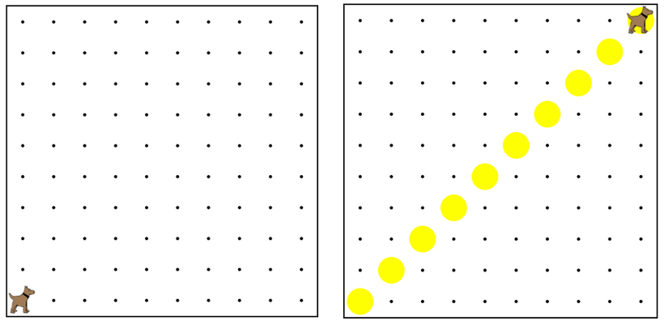

This program has karel lay a diagonal row of tennis balls. However,
the indenting is all wrong. Can you properly indent this program?
此程序卡雷爾打下網球的對角線行。然而，縮進是完全錯誤的。你能正確地縮進這個計劃？

function start(){ 功能開始（）{
while(frontIsClear()){ 而（前面是明確的（））{
putBall(); 放球（）;
move(); 移動（）;
turnLeft(); 左轉（）;
move(); 移動（）;
for(var i = 0; i < 3; i++){ 對於（可變 i = 0; i < 3; i++){
turnLeft(); 左轉（）;
}
}
putBall(); 放球（）;
}